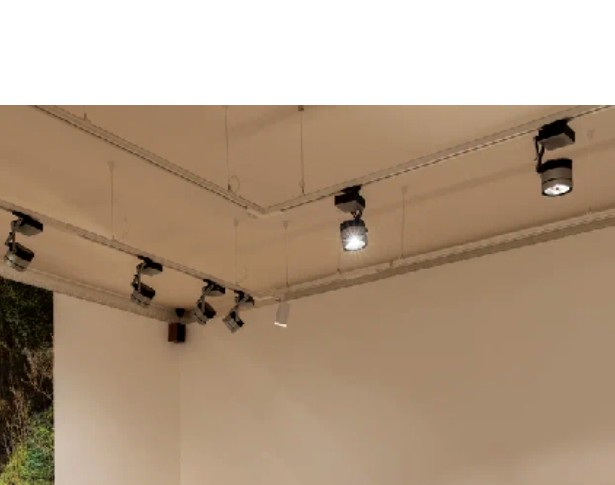

01
Educational programmes
Programme concepts, curricula, learning frameworks, faculty coordination, mentoring and public outcomes.
I develop cultural and educational projects from early concept to public presentation — connecting people, institutions, research and production.
I build cultural and educational programmes, exhibitions and interdisciplinary collaborations at the intersection of contemporary art, technology and research.
My work spans the full project lifecycle: developing concepts and educational frameworks, coordinating teams, mentoring participants, producing exhibitions and bringing projects to public presentation.
My background as an artist and researcher informs the way I approach interdisciplinary projects, particularly those connecting contemporary art, artificial intelligence, digital culture and science.
Programme concepts, curricula, learning frameworks, faculty coordination, mentoring and public outcomes.
Curatorial concepts, artist communication, budgets, equipment, installation, PR coordination and public programmes.
Projects connecting contemporary art with AI, emerging technologies, research and higher education.
A professional trajectory shaped by building structures in which artists, students, educators and institutions can work together.
Laboratory Lead & Lecturer — Cross-Media in Art
Founding Programme Curator — MA in Technological Art
Curator & Lecturer — Student Initiatives Platform
Exhibitions and cultural projects across art, photography and emerging technologies
Not a list of responsibilities — a closer look at how I build programmes, learning environments and exhibitions.
How do you build an educational programme for a field that does not fit neatly into either an art school or a technology curriculum?
The programme began with a question: what kind of practitioner should graduate from a Master's programme in Technological Art? From there, I worked on educational goals, learning outcomes and curriculum structure.
I recruited and coordinated interdisciplinary faculty, worked with lecturers on courses and assignments, and mentored students as research developed into technically and conceptually resolved projects.
Semester work culminated in exhibitions. I coordinated students, faculty, university administration and exhibition venues, and supported projects through planning, equipment, logistics and installation.
A laboratory where technology is not the subject itself, but a tool for developing artistic ideas.
I developed an interdisciplinary programme connecting contemporary art, emerging technologies and digital media, designed semester assignments, and delivered lectures and workshops.
I mentored individual and collaborative projects from research and concept through technical implementation, reviews, exhibitions and public presentation.

Curating as both intellectual work and production: building the exhibition narrative, then making the conditions for it to exist.
I develop exhibition concepts and texts, work with artists to bring projects to completion, request and review project materials, and shape exhibition and display decisions.
I manage budgets and estimates, source equipment, coordinate with galleries, foundations and PR teams, supervise installation from start to finish, and develop talks, concerts and parallel events around the exhibition.


I am most useful in projects where ideas need to become systems: a curriculum, an exhibition, a collaboration, a public programme or a new institutional format.